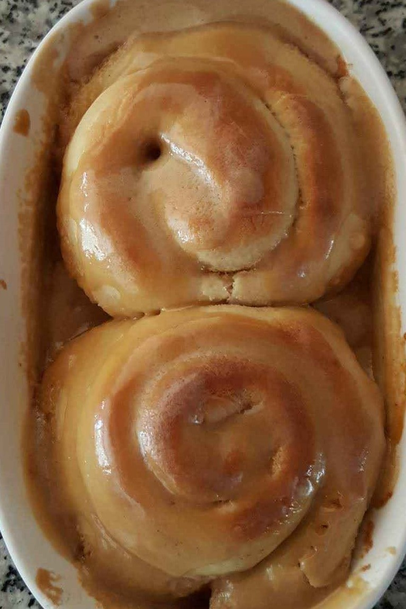

Ingredients
- 1 cup - Warm Water (110°F)
- 1 tsp - Yeast
- 1/4 cup - Granulated Sugar
- 3 cups - Flour
- 1 1/2 tsp - Salt
- 3 T - Milk
- 1 - Egg
- 5 T - Butter, Softened
Sauce
- 1/3 cup - Butter
- 1/2 cup - Brown Sugar
- 1/2 cup - Vanilla Ice Cream
Steps
- Make the Dough
- Add the warm water, yeast, and a Tbs of sugar to a pot and let sit until bubbly (about 15 minutes)
- Add flour, remaining sugar, salt, milk, egg, and butter, and stir until dough is formed
- Let rise until dough doubles in size (about 1 hour)
- Roll out dough into a rectangle
- Spread butter, and sprinkle with brown sugar and cinnamon
- Roll the dough, and slice into 16 rolls
- Greese two 9" x 9" deep pans and pour some sauce to cover the bottom
- Place all the rolls, swirl side up in the pans
- Drizzle the remaining sauce on top of the rolls
- Let rise again until the rolls double in size (about 1 hour)
- Preheat the oven to 320°F and bake for 20 minutes
- Let cool and serve
Sauce
- Melt the butter and brown sugar in a sauce pan
- Once the butter sugar mixture is creamy stir in the ice cream
- Once ice cream melts pour some sauce to cover the bottom of the buttered pan